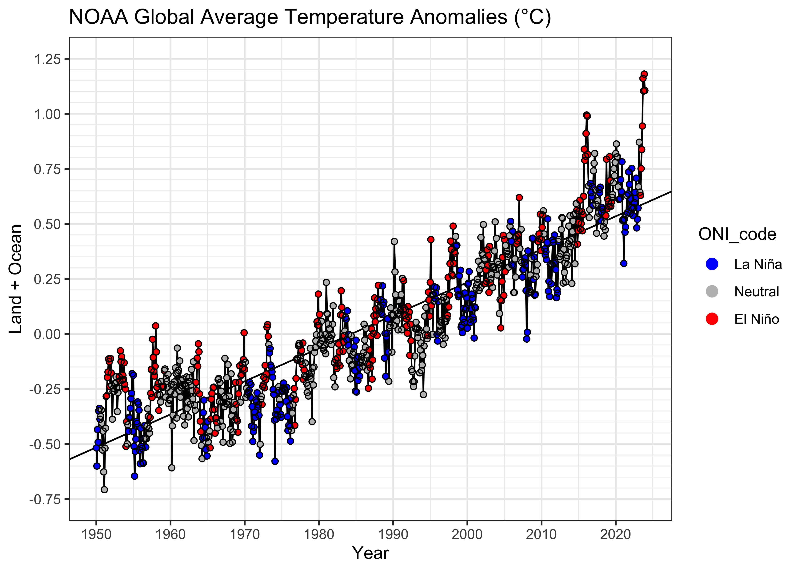

Regression 2 – Multiple regression
NOTE: This page has been revised for Winter 2024, but may undergo further edits.
1 Introduction
Multiple regression is (conceptually) a simple extension of bivariate regression, in which the influence of more than one predictor variable on the response can be estimated. For the case with two predictor variables, the analysis can be thought of as involving the fitting of a plane (as opposed to a line in the bivariate regression case), and the equations for the OLS estimates of the regression equations are only a little more complicated algebraically. For three or more predictors, the algebra is also quite simple, but requires the use of matrix algebra.
A couple of illustrations jointly describe the idea of fitting a plane:
{kind=link}
{kind=link}
2 Fitting a multiple regression equation
The mathematics behind multiple regression analysis is more complicated than that for bivariate regression, but can be elegantly presented using matrix algebra
The following example provide a short illustration of the use of
matrix algebra to obtain the regression coefficients.
The example data set for illustrating the use of regression diagnostics
(/Users/bartlein/projects/RESS/data/csv_files/) is used
here, in particular, the multiple regression using x1 and
x2 as predictors for the response variable
y5
Read the data:
# read regrex3.csv
# modify the following path to reflect local files
csv_path <- "/Users/bartlein/projects/RESS/data/csv_files/"
csv_name <- "regrex3.csv"
csv_file <- paste(csv_path, csv_name, sep="")
regrex3 <- read.csv(csv_file) First, take a look at the different variables in the example data set.
## Obs.no. x1 x2 y1 y2 y3
## Min. : 1.00 Min. : 0.2076 Min. :-9.794 Min. :-7.580 Min. :-6.739 Min. :-7.735
## 1st Qu.: 25.75 1st Qu.: 7.6887 1st Qu.:16.850 1st Qu.: 2.104 1st Qu.: 2.580 1st Qu.: 1.761
## Median : 50.50 Median :15.1511 Median :27.546 Median :10.098 Median :10.002 Median :10.487
## Mean : 50.50 Mean :14.0750 Mean :28.468 Mean : 9.513 Mean : 9.513 Mean : 9.473
## 3rd Qu.: 75.25 3rd Qu.:20.4470 3rd Qu.:40.138 3rd Qu.:17.263 3rd Qu.:16.819 3rd Qu.:17.126
## Max. :100.00 Max. :24.9525 Max. :63.861 Max. :24.217 Max. :24.459 Max. :24.168
## y4 y5
## Min. :-2.097 Min. : -8.455
## 1st Qu.: 2.256 1st Qu.: 45.818
## Median : 9.483 Median : 76.446
## Mean : 9.716 Mean : 73.884
## 3rd Qu.:16.588 3rd Qu.:102.690
## Max. :24.217 Max. :150.621## y5 x1 x2
## [1,] 99.4237 17.6403 39.2009
## [2,] 47.8476 9.3786 20.2735
## [3,] 89.1535 20.0313 33.7959
## [4,] 143.1316 23.4556 48.6115
## [5,] 124.6998 24.4938 47.3454
## [6,] 51.5796 8.8475 18.0954Create an n row by 1 column matrix (i.e. a column vector) called y:
## [1] 100 1## [,1]
## [1,] 99.4237
## [2,] 47.8476
## [3,] 89.1535
## [4,] 143.1316
## [5,] 124.6998
## [6,] 51.5796Create an n row by p+1 matrix, X,
with 1’s in the first column, and x1 and x2 in
the second and third columns:
## [1] 100 3## [,1] [,2] [,3]
## [1,] 1 17.6403 39.2009
## [2,] 1 9.3786 20.2735
## [3,] 1 20.0313 33.7959
## [4,] 1 23.4556 48.6115
## [5,] 1 24.4938 47.3454
## [6,] 1 8.8475 18.0954Now use matrix algebra to calculate b, the p+1 row by 1 column matrix (e.g. a column vector) of regression coefficients, b0, b1 and b2: b = (X’X)-1X’y.
## [,1]
## [1,] 3.4159624
## [2,] 0.9241464
## [3,] 2.0184663## [1] 3 1The matrix functions and operators used in the above expression
include t(), which transposes a matrix, %*%,
which is the matrix multiplication operator, and solve(),
which inverts a matrix.
Compare these values with those obtained using the lm()
function:
##
## Call:
## lm(formula = y5 ~ x1 + x2, data = regrex3)
##
## Coefficients:
## (Intercept) x1 x2
## 3.4160 0.9241 2.0185Now calculate the fitted values (y-hats), i.e. \(\mathbf{\widehat{y}}\) = Xb:
and compare these with those obtained using the lm()
function
## [,1] [,2]
## 1 98.84388 98.84388
## 2 53.00454 53.00454
## 3 90.14370 90.14370
## 4 123.21305 123.21305
## 5 121.61691 121.61691
## 6 48.11730 48.11730In addition to being able to efficiently represent the derivation of terms and their properties in regression analysis in general, matrix algebra also provides a an efficient way of doing the actual calculations.
3 Regression Assumptions
The basic regression model (as well as more complicated ones) have certain underlying assumptions, violations of which have an impact on the optimality of the fitted model, i.e., the extent to which the model and its parameters represent the best model that can be fit, that is, the one that performs the best in the tasks of representing the relationship between the response variable and the predictor variable(s), or predicting future values of the response variable given new values of the predictor variables.
The main assumptions that underlie regression analysis:
- the prediction errors or residuals are assumed to be independent, identically normally distributed random variables, with a mean of 0 and a standard deviation of s,
- the X’s (predictor or independent variables) are known without error,
- the X’s are not correlated.
- the correct model has been specified (i.e. the right predictors have been included in the model.
If the assumptions are not violated, then the Gauss-Markov theorem indicates that the usual OLS estimates are optimal in the sense of being unbiased and having minimum variance. If one or more of the assumptions are violated, then estimated regression coefficients may be biased (i.e. they may be systematically in error), and not minimum variance (i.e. there may be more uncertainty in the coefficients than is apparent from the results).
3.1 Consequences of assumption violations
If the assumptions are violated, then there may be two consequences–the estimated coefficients may be biased (i.e. systematically wrong), and they may longer have minimum variance (i.e. their uncertainty increases).
- the notion of variability of the regression coefficients
- illustrations using repeated simulations of data sets with built-in assumption violations [examples], [solutions]
![[examples]](https://pjbartlein.github.io/REarthSysSci/images/violate1.gif){kind=link}
![[solutions]](https://pjbartlein.github.io/REarthSysSci/images/violate2.gif){kind=link}
4 Example – NOAA Global Land + Ocean temperatures
It’s plain to see that Earth’s average temperature is increasing (e.g. [NOAA 2023 Global Climate Report]. (See the second figure.) One issue that arises is the estimation of the rate of temperature increase, and whether the rate is also changing over time. One factor that complicates that assessment is ENSO (El Niño Southern Oscillation), the variations in temperature of the tropical Pacific Ocean [https://www.climate.gov/enso], between warm phases (El Niño) and cool phases (La Niña). In addition to the influence of ENSO on atmospheric circulation across the Pacific, owing to the large surface area of the Pacific Ocean, ENSO may influence global average temperatures, locally (in time) increasing them during warm phases (El Niño) and locally decreasing them during cool phases (La Niña) ([NOAA 2023 Global Climate Report]. See the third figure.)
Because both things are going at at once (the trend toward increasing temperature overall, and the local ENSO-related increases and decreases), it’s difficult to quantitatively assess or separate the trend and local variability from the inspection of figures alone. That’s where quantitative estimation using regression comes in. The information for colorizing the 1950-present monthly temperature plot comes from the [Oceanic Niño Index], a composite of several tropical Pacific sea-surface temperature (SST) indices, which has been detrended. The data are from [ONI data], see here for the data in tabular form [ONI data table].
In addition to the ONI data, we’ll also use the [NOAA
Global Monthly Land + Ocean time series] (back to 1950). Because the
trend in global temperatures is not mechanistically controlled by time,
but is controlled by CO2, we’ll also use the monthly
Scripps/NOAA CO2 trends data [https://gml.noaa.gov/ccgg/trends/]
(March 1958 onward). The data can be found here: [NOAA
CO2 Trends]. The input data set
(NOAA_Globe_T_ENSO_CO2_1950-2023.csv) contains the year,
month, decimal year, temperatures of the land, ocean, and land plus
ocean, the ONI monthly total value, the anomaly and code, and the
monthly mean CO2, the deseasonalized CO2 value,
and their difference (the “local” CO2 anomaly.)
4.1 Read the NOAA data
Load libraries
## Registered S3 method overwritten by 'quantmod':
## method from
## as.zoo.data.frame zooRead the data, modifying paths as necessary:
# read NOAA monthly temperature, ONI (ENSO), and CO2
# modify the following path to reflect local files
csv_path <- "/Users/bartlein/projects/RESS/data/csv_files/"
csv_name <- "NOAA_Globe_T_ENSO_CO2_1950-2023.csv"
csv_file <- paste(csv_path, csv_name, sep="")
NOAA <- read.csv(csv_file)
str(NOAA)## 'data.frame': 888 obs. of 12 variables:
## $ Year : int 1950 1950 1950 1950 1950 1950 1950 1950 1950 1950 ...
## $ Month : int 1 2 3 4 5 6 7 8 9 10 ...
## $ YrMn : num 1950 1950 1950 1950 1950 ...
## $ T_Land : num -0.733 -0.961 -0.514 -0.671 -0.343 ...
## $ T_Ocean : num -0.421 -0.438 -0.398 -0.411 -0.352 ...
## $ T_LandOcean : num -0.518 -0.6 -0.434 -0.492 -0.349 ...
## $ ONI_total : num 24.7 25.2 25.8 26.1 26.3 ...
## $ ONI_anm : num -1.53 -1.34 -1.16 -1.18 -1.07 -0.85 -0.54 -0.42 -0.39 -0.44 ...
## $ ONI_code : chr "La Niña" "La Niña" "La Niña" "La Niña" ...
## $ CO2_mean : num NA NA NA NA NA NA NA NA NA NA ...
## $ CO2_deseas : num NA NA NA NA NA NA NA NA NA NA ...
## $ CO2_local_anm: num NA NA NA NA NA NA NA NA NA NA ...## Year Month YrMn T_Land T_Ocean T_LandOcean
## Min. :1950 Min. : 1.00 Min. :1950 Min. :-1.39426 Min. :-0.53360 Min. :-0.70738
## 1st Qu.:1968 1st Qu.: 3.75 1st Qu.:1968 1st Qu.:-0.26548 1st Qu.:-0.23703 1st Qu.:-0.24216
## Median :1986 Median : 6.50 Median :1987 Median : 0.07416 Median :-0.03541 Median :-0.00748
## Mean :1986 Mean : 6.50 Mean :1987 Mean : 0.18632 Mean :-0.02702 Mean : 0.03909
## 3rd Qu.:2005 3rd Qu.: 9.25 3rd Qu.:2005 3rd Qu.: 0.64032 3rd Qu.: 0.15708 3rd Qu.: 0.31314
## Max. :2023 Max. :12.00 Max. :2024 Max. : 2.26227 Max. : 0.72358 Max. : 1.18047
##
## ONI_total ONI_anm ONI_code CO2_mean CO2_deseas
## Min. :24.38 Min. :-2.03000 Length:888 Min. :312.4 Min. :314.4
## 1st Qu.:26.23 1st Qu.:-0.57000 Class :character 1st Qu.:330.2 1st Qu.:330.5
## Median :26.95 Median :-0.05000 Mode :character Median :354.9 Median :355.2
## Mean :26.90 Mean : 0.00911 Mean :358.7 Mean :358.7
## 3rd Qu.:27.54 3rd Qu.: 0.53000 3rd Qu.:384.2 3rd Qu.:384.0
## Max. :29.26 Max. : 2.64000 Max. :424.0 Max. :422.6
## NA's :98 NA's :98
## CO2_local_anm
## Min. :-3.62000
## 1st Qu.:-1.90000
## Median : 0.32000
## Mean : 0.00016
## 3rd Qu.: 2.00250
## Max. : 3.52000
## NA's :98Note the missing CO2 data prior to 1958.
Decode the ONI_code variable, a character on input, in to a factor and order the factors from “La Niña” to “El Niño” (with “Neutral” in the middle.
# recode ONI_code as a factor
NOAA$ONI_code <- factor(NOAA$ONI_code, levels = c("La Niña", "Neutral", "El Niño"))Get a simple plot:
# plots
plot(T_LandOcean ~ YrMn, type = "l", col = "gray70", lwd = 1.5, data = NOAA)
points(T_LandOcean ~ YrMn, pch = 16, cex =0.8, data = NOAA)Here’s a {gglot2} version of the basic plot:
# ggplot2 version
ggplot(data = NOAA, aes(x=YrMn, y=T_LandOcean)) +
geom_line(color = "gray70") +
geom_point(size = 1) +
scale_x_continuous(breaks = seq(1950, 2025, by = 10)) +
scale_y_continuous(limits = c(-0.75, 1.25), breaks = seq(-1.75, 1.25, by = 0.25),
minor_breaks = seq(-0.75, 1.25, by = 0.05)) +
labs(title = paste("NOAA Global Average Temperature Anomalies (","°","C)", sep = ""),
x = "Year", y = "Land + Ocean") +
theme_bw()Even at this point, there’s some visual evidence that the relationship is curvilinear, with the slope of the trend increasing over time. We’ll postpone dealing with that for a little while.
For later use, create another data frame, removing the observations with missing CO2 data.
## Year Month YrMn T_Land T_Ocean T_LandOcean
## Min. :1958 Min. : 1.000 Min. :1958 Min. :-1.3943 Min. :-0.533599 Min. :-0.60830
## 1st Qu.:1974 1st Qu.: 4.000 1st Qu.:1975 1st Qu.:-0.2130 1st Qu.:-0.183695 1st Qu.:-0.20462
## Median :1991 Median : 7.000 Median :1991 Median : 0.1742 Median :-0.004275 Median : 0.04485
## Mean :1991 Mean : 6.513 Mean :1991 Mean : 0.2520 Mean : 0.010756 Mean : 0.08551
## 3rd Qu.:2007 3rd Qu.: 9.750 3rd Qu.:2007 3rd Qu.: 0.7062 3rd Qu.: 0.178960 3rd Qu.: 0.34230
## Max. :2023 Max. :12.000 Max. :2024 Max. : 2.2623 Max. : 0.723581 Max. : 1.18047
## ONI_total ONI_anm ONI_code CO2_mean CO2_deseas CO2_local_anm
## Min. :24.38 Min. :-2.03000 La Niña:216 Min. :312.4 Min. :314.4 Min. :-3.620000
## 1st Qu.:26.28 1st Qu.:-0.55750 Neutral:367 1st Qu.:330.2 1st Qu.:330.5 1st Qu.:-1.900000
## Median :26.99 Median :-0.04500 El Niño:207 Median :354.9 Median :355.2 Median : 0.320000
## Mean :26.94 Mean : 0.01356 Mean :358.7 Mean :358.7 Mean : 0.000165
## 3rd Qu.:27.57 3rd Qu.: 0.51000 3rd Qu.:384.2 3rd Qu.:384.0 3rd Qu.: 2.002500
## Max. :29.26 Max. : 2.64000 Max. :424.0 Max. :422.6 Max. : 3.520000## 'data.frame': 790 obs. of 12 variables:
## $ Year : int 1958 1958 1958 1958 1958 1958 1958 1958 1958 1958 ...
## $ Month : int 3 4 5 6 7 8 9 10 11 12 ...
## $ YrMn : num 1958 1958 1958 1958 1958 ...
## $ T_Land : num -0.458 -0.513 -0.192 -0.715 -0.422 ...
## $ T_Ocean : num -0.145 -0.169 -0.239 -0.182 -0.209 ...
## $ T_LandOcean : num -0.242 -0.276 -0.224 -0.347 -0.275 ...
## $ ONI_total : num 28.3 28.3 28.2 27.9 27.4 ...
## $ ONI_anm : num 1.27 0.93 0.74 0.64 0.57 0.43 0.39 0.44 0.5 0.61 ...
## $ ONI_code : Factor w/ 3 levels "La Niña","Neutral",..: 3 3 3 3 3 2 2 2 3 3 ...
## $ CO2_mean : num 316 317 318 317 316 ...
## $ CO2_deseas : num 314 315 315 315 315 ...
## $ CO2_local_anm: num 1.27 2.29 2.8 2.1 0.68 -1.25 -2.88 -2.98 -1.87 -0.76 ...## Year Month YrMn T_Land T_Ocean T_LandOcean ONI_total ONI_anm ONI_code CO2_mean CO2_deseas
## 99 1958 3 1958.167 -0.458099 -0.144789 -0.241868 28.26 1.27 El Niño 315.70 314.43
## 100 1958 4 1958.250 -0.512921 -0.169475 -0.275892 28.28 0.93 El Niño 317.45 315.16
## 101 1958 5 1958.333 -0.191902 -0.238545 -0.224092 28.19 0.74 El Niño 317.51 314.71
## 102 1958 6 1958.417 -0.715345 -0.182276 -0.347448 27.87 0.64 El Niño 317.24 315.14
## 103 1958 7 1958.500 -0.422489 -0.208782 -0.274998 27.38 0.57 El Niño 315.86 315.18
## 104 1958 8 1958.583 -0.471543 -0.189235 -0.276708 26.85 0.43 Neutral 314.93 316.18
## CO2_local_anm
## 99 1.27
## 100 2.29
## 101 2.80
## 102 2.10
## 103 0.68
## 104 -1.254.2 Simple linear regression (lm_01)
First, do a simple linear regression with YrMn as the
predictor and land plus ocean temperatures T_LandOcean as
the response.
##
## Call:
## lm(formula = T_LandOcean ~ YrMn, data = NOAA)
##
## Residuals:
## Min 1Q Median 3Q Max
## -0.42443 -0.10765 -0.00597 0.09488 0.58830
##
## Coefficients:
## Estimate Std. Error t value Pr(>|t|)
## (Intercept) -2.976e+01 4.793e-01 -62.09 <2e-16 ***
## YrMn 1.500e-02 2.412e-04 62.18 <2e-16 ***
## ---
## Signif. codes: 0 '***' 0.001 '**' 0.01 '*' 0.05 '.' 0.1 ' ' 1
##
## Residual standard error: 0.1536 on 886 degrees of freedom
## Multiple R-squared: 0.8135, Adjusted R-squared: 0.8133
## F-statistic: 3866 on 1 and 886 DF, p-value: < 2.2e-16## [1] -803.5893The fit of the “curve” (a straight line in this instance) is pretty good: the R2 value is 0.8135, which is almost identical to the adjusted R2, which also incorporates the automatic increase in R2 that occurs as more predictors are added. The Akaike Information Criterion (AIC) (-803.5893 here( is a similar statistic that trades off the goodness of fit again the number of parameters that have to be estimated. In practice we would choose the model with the lowest AIC value among choices. The t- and F-statistics are also significant. These are tests of the null hypothesis that the regression coefficients are 0.0, and that there is a significant relationship between the response and predictor(s).
Here’s a look at the data, fitted values (the line) and the residuals, whose sum-of-squares were minimized:
# examine the fitted model -- residuals
plot(T_LandOcean ~ YrMn, data = NOAA, type="n")
abline(lm_01)
segments(NOAA$YrMn, fitted(lm_01), NOAA$YrMn, NOAA$T_LandOcean, col = "gray")
points(T_LandOcean ~ YrMn, data = NOAA, pch = 16, cex = 0.5)The fitted model can be further examined by looking at the prediction intervals, which gauge the uncertainty in the predictions from the model, and the confidence intervals, which gauge the uncertainty in the regression line.
# examine the fitted model -- prediction and confidence limits
plot(T_LandOcean ~ YrMn, data = NOAA, type="n")
abline(lm_01)
points(T_LandOcean ~ YrMn, data = NOAA, pch = 16, cex = 0.5)
pred_data <- data.frame(YrMn=NOAA$YrMn)
pred_int <- predict(lm_01, int="p", newdata=pred_data)
conf_int <- predict(lm_01, int="c", newdata=pred_data)
matlines(pred_data$YrMn, pred_int, lty=c(1,2,2), col="black")
matlines(pred_data$YrMn, conf_int, lty=c(1,2,2), col="orange")Close inspection of both intervals shows that the slightly flare out farther away from the centroid of the data. The fitted line always goes through the centroid of the data (the mean of the response and the mean of the predictor), which acts more-or-less as a “pivot” and so it makes sense that the uncertainties are greater the farther away from that centroid one goes.
The assumptions can be checked using a few diagnostic plots:
# regression diagnostics
oldpar <- par(mfrow = c(2, 2))
plot(lm_01, which=c(1,2,4))
acf(lm_01$residuals)The residual plot (residuals plotted as a function of the fitted
values) has a distinct inverted arch, suggesting the there is some
non-linearity in the relationship between the response and the predictor
(i.e. a non-linear trend), The qqnorm() plot suggests that
the residuals are essentially normally distributed (except that a few
large residuals are tending to make the upper-tail of the distribution a
little “fat”). Cook’s distance measures the influence of individual
observations on the regression. It’s not unusual in time-series data for
the first and last observations to show greater leverage on the
regression coefficients. The residual autocorrelation function, does,
however, signal that there is considerable autocorrelation in the
residuals. This could arise from incompletely accounting for the trend
in the data, or from short-term persistence in the response. This will
be examined further below.
4.2.1 Eye-balling the influence of ENSO on the regression model
The potential influence of ENSO on the trend in the data can be illustrated by simply labeling the points by the ONI_code values, red for El Niño, blue for La Niña, and gray for Neutral conditions:
# examine the regression equation again, by ENSO state
pal <- c("blue", "gray", "red")
plot(T_LandOcean ~ YrMn, data = NOAA, type="n")
abline(lm_01)
segments(NOAA$YrMn, fitted(lm_01), NOAA$YrMn, NOAA$T_LandOcean, col = "gray")
points(T_LandOcean ~ YrMn, data = NOAA, pch = 16, cex = 0.8, col = pal[ONI_code])It’s easy to see that many positive residuals are red, and that many negative residuals are blue, suggesting that the regression line under predicts during El Niño conditions and over predicts during La Niña conditions.
Here’s a {ggplot2} package version of the labeled
plot:
# points colored by ENSO state
ggplot() +
geom_line(data = NOAA, aes(x = YrMn, y = T_LandOcean)) +
geom_abline(intercept = lm_01$coefficients[1], slope = lm_01$coefficients[2], color = "black") +
geom_point(data = NOAA, aes(x = YrMn, y = T_LandOcean, color = ONI_code), size = 1.5) +
geom_point(data = NOAA, aes(x = YrMn, y = T_LandOcean), color = "black", shape = 1, size = 1.5) +
scale_color_manual(values = c("blue", "gray", "red"),
limits = c("La Niña", "Neutral", "El Niño")) +
scale_x_continuous(breaks = seq(1950, 2025, by = 10)) +
scale_y_continuous(limits = c(-0.75, 1.25), breaks = seq(-1.75, 1.25, by = 0.25),
minor_breaks = seq(-0.75, 1.25, by = 0.05)) +
labs(title = paste("NOAA Global Average Temperature Anomalies (","°","C)", sep = ""),
x = "Year", y = "Land + Ocean") +
guides(color = guide_legend(override.aes = list(size = 3))) +
theme_bw()
Here’s a plot of the residuals, on the same scales as the data plot:
# residuals
ggplot() +
geom_line(data = NOAA, aes(x = YrMn, y = residuals(lm_01))) +
geom_point(data = NOAA, aes(x = YrMn, y = residuals(lm_01), color = ONI_code), size = 1.5) +
geom_point(data = NOAA, aes(x = YrMn, y = residuals(lm_01)), color = "black", shape = 1, size = 1.5) +
scale_color_manual(values = c("blue", "gray", "red"),
limits = c("La Niña", "Neutral", "El Niño")) +
scale_x_continuous(breaks = seq(1950, 2025, by = 10)) +
scale_y_continuous(limits = c(-0.75, 1.25), breaks = seq(-1.75, 1.25, by = 0.25)
, minor_breaks = seq(-0.75, 1.25, by = 0.05)) +
labs(title = paste("NOAA Global Average Temperature Anomalies (","°","C)", sep = ""),
x = "Year", y = "Land + Ocean (Residuals)") +
guides(color = guide_legend(override.aes = list(size = 3))) +
theme_bw()The plot of the residuals from the first model versus time again hints and some non-linearity in the trend and the sorting of the residual values by ENSO state is quite evident. To look at this further, we can use a grouped box plot:
# residual grouped box plot
opar <- par(mfrow=c(1,3))
boxplot(residuals(lm_01) ~ NOAA$ONI_code, ylim=c(-1,1))
par(opar)
From the box plots, it’s possible to infer that the median of the residuals during El Niño conditions is about 0.1 oC higher than during La Niña” conditions, while the median during Neutral conditions is very close to 0.0.
The assumptions that underlie ordinary least-squares regression essentially state that there should be no discernible pattern in the residuals, apart from being normally distributed random numbers. When that assumption is satisfied, then the Gauss-Markov theorem assures us that there is no better way to estimate the regression coefficients. Here, however, there are clear patterns in the residuals: they have a slight curvilinear trend, are autocorrelated, but mainly show considerable bias related to ENSO state.
4.3 Dummy-variable regression (lm_02)
One approach for easily learning about the consequences of a “group
membership” variable like ENSO state as represented by the
ONI_code is the unfortunately named “dummy variable
regression.” The name arises from the generation of various “dummy” (or
indicator) variables, that can be employed to estimate separate
intercept and slope values for the different groups. For example, a set
of variables for examining the variations in intercepts across groups
would take on the value 0.0, except when the particular ENSO state
occurs, when it would be set equal to 1.0, and likewise, to examine
variations in slope the dummy variables would set equal to 0.0, except
when the particular ENSO state occurs, when it would be set equal to the
predictor variable, in this case YrMn. Although the dummy
variables could be generated for all three ENSO states (in this
example), only two of each kind would be included in what’s now a
multiple regression model because including all three would lead to
linearities among predictors: the sum of the intercept-estimating dummy
variables would equal 1.0 for every observation, while the sum of the
slope-estimating variables would equal YrMn.
In the current example, we’ll include the dummy variables for Neutral
and El Niño conditions (omitting those for La Niña conditions). To
interpret the results, the intercept and slope for La Niña conditions
would simply be the overall intercept and slope of the fitted model. The
intercept for El Niño conditions would be the sum of the overall
intercept and the coefficient of the El Niño-condition (0 or 1)
intercept dummy variable, while the slope for El Niño conditions would
be the sum of the overall slope and the coefficient of the El Niño
condition (0 or YrMn) slope dummy variable. Dummy-variable
regression is much more elegant than its name implies.
It turns out that the “equation” language in R takes care of the generation of the dummy variables (and leaving one out). (But there will be an example of explicit generation of dummy variables below.) Here’s the code to look at only the difference in intercept among ENSO-state groups.
##
## Call:
## lm(formula = T_LandOcean ~ YrMn + ONI_code, data = NOAA)
##
## Residuals:
## Min 1Q Median 3Q Max
## -0.41602 -0.10532 -0.00456 0.09082 0.50530
##
## Coefficients:
## Estimate Std. Error t value Pr(>|t|)
## (Intercept) -3.018e+01 4.543e-01 -66.428 < 2e-16 ***
## YrMn 1.518e-02 2.283e-04 66.490 < 2e-16 ***
## ONI_codeNeutral 5.553e-02 1.169e-02 4.749 2.38e-06 ***
## ONI_codeEl Niño 1.386e-01 1.311e-02 10.570 < 2e-16 ***
## ---
## Signif. codes: 0 '***' 0.001 '**' 0.01 '*' 0.05 '.' 0.1 ' ' 1
##
## Residual standard error: 0.1447 on 884 degrees of freedom
## Multiple R-squared: 0.8347, Adjusted R-squared: 0.8342
## F-statistic: 1488 on 3 and 884 DF, p-value: < 2.2e-16All of the coefficients in the model are significant as before, and the R2 value has gone up. One way to gauge the improvement by the second model over the first is to compare the AIC values:
## [1] -803.5893 -906.6724The AIC value for the second model is indeed lower than that for the first model. Another comparison can be made by doing a simple analysis of variance:
## Analysis of Variance Table
##
## Model 1: T_LandOcean ~ YrMn
## Model 2: T_LandOcean ~ YrMn + ONI_code
## Res.Df RSS Df Sum of Sq F Pr(>F)
## 1 886 20.893
## 2 884 18.519 2 2.3734 56.647 < 2.2e-16 ***
## ---
## Signif. codes: 0 '***' 0.001 '**' 0.01 '*' 0.05 '.' 0.1 ' ' 1The F-statistic is significant (i.e. it has a low p-value), and so overall, the second, dummy-variable model (lm_02) appears to be (statistically) superior to the simple linear regression model (lm_01).
Here’s what the fitted model looks like:
# display the fitted lines
plot(T_LandOcean ~ YrMn, data = NOAA, type="n")
points(T_LandOcean ~ YrMn, data = NOAA, pch = 16, cex = 0.5)
legend("bottomright", legend=c("La Niña", "Neutral", "El Niño"), lty=c(1,1,1), lwd=3, cex=1, col=c("blue","gray","red"))
lines(fitted(lm_02)[NOAA$ONI_code == "La Niña"] ~ NOAA$YrMn[NOAA$ONI_code == "La Niña"], lwd=2, col="blue")
lines(fitted(lm_02)[NOAA$ONI_code == "Neutral"] ~ NOAA$YrMn[NOAA$ONI_code == "Neutral"], lwd=2, col="gray")
lines(fitted(lm_02)[NOAA$ONI_code == "El Niño"] ~ NOAA$YrMn[NOAA$ONI_code == "El Niño"], lwd=2, col="red")Here is comparison of the grouped box plots for the two models:
# residual grouped box plot
opar <- par(mfrow=c(1,3))
boxplot(residuals(lm_01) ~ NOAA$ONI_code, ylim=c(-1,1))
boxplot(residuals(lm_02) ~ NOAA$ONI_code, ylim=c(-1,1))
par(opar)The bias in the residuals (positive for El Niño conditions, negative for La Niña conditions) has evidently removed.
4.4 Dummy-variable regression, both intercept and slope varying (lm_03)
Here is the code for fitting a model where both intercept and slope
vary. (Note the subtle difference, an * instead of a
+ in the model specification.)
# dummy-variable regression, slope and intercept varying
lm_03 <- lm(T_LandOcean ~ YrMn * ONI_code, data = NOAA)
summary(lm_03)##
## Call:
## lm(formula = T_LandOcean ~ YrMn * ONI_code, data = NOAA)
##
## Residuals:
## Min 1Q Median 3Q Max
## -0.41236 -0.10266 -0.00416 0.09006 0.50897
##
## Coefficients:
## Estimate Std. Error t value Pr(>|t|)
## (Intercept) -3.156e+01 8.153e-01 -38.712 <2e-16 ***
## YrMn 1.587e-02 4.097e-04 38.741 <2e-16 ***
## ONI_codeNeutral 2.337e+00 1.075e+00 2.174 0.0300 *
## ONI_codeEl Niño 1.711e+00 1.189e+00 1.439 0.1505
## YrMn:ONI_codeNeutral -1.148e-03 5.407e-04 -2.122 0.0341 *
## YrMn:ONI_codeEl Niño -7.903e-04 5.982e-04 -1.321 0.1868
## ---
## Signif. codes: 0 '***' 0.001 '**' 0.01 '*' 0.05 '.' 0.1 ' ' 1
##
## Residual standard error: 0.1445 on 882 degrees of freedom
## Multiple R-squared: 0.8356, Adjusted R-squared: 0.8346
## F-statistic: 896.5 on 5 and 882 DF, p-value: < 2.2e-16Compare the models:
## [1] -803.5893 -906.6724 -907.2618## Analysis of Variance Table
##
## Model 1: T_LandOcean ~ YrMn + ONI_code
## Model 2: T_LandOcean ~ YrMn * ONI_code
## Res.Df RSS Df Sum of Sq F Pr(>F)
## 1 884 18.519
## 2 882 18.424 2 0.095464 2.2851 0.1024The AIC value for this third (intercept + slope varying model) is a little lower than for the second, but the analysis of variance suggest there’s not much difference in the explained variance. (Small F-statistic, large “p*-value.)
The fitted lines show little variation:
# display the fitted lines
plot(T_LandOcean ~ YrMn, data = NOAA, type="n")
points(T_LandOcean ~ YrMn, data = NOAA, pch = 16, cex = 0.5)
legend("bottomright", legend=c("La Niña", "Neutral", "El Niño"), lty=c(1,1,1), lwd=3, cex=1, col=c("blue","gray","red"))
lines(fitted(lm_03)[NOAA$ONI_code == "La Niña"] ~ NOAA$YrMn[NOAA$ONI_code == "La Niña"], lwd=2, col="blue")
lines(fitted(lm_03)[NOAA$ONI_code == "Neutral"] ~ NOAA$YrMn[NOAA$ONI_code == "Neutral"], lwd=2, col="gray")
lines(fitted(lm_03)[NOAA$ONI_code == "El Niño"] ~ NOAA$YrMn[NOAA$ONI_code == "El Niño"], lwd=2, col="red")The slope for the Neutral conditions is a little lower than for the La Niña and El Niño, which doesn’t have an immediately apparent physical explanation.
Here is the same plot, with the regression lines for
lm_02 added as dashed lines:
# display the fitted lines
plot(T_LandOcean ~ YrMn, data = NOAA, type="n")
points(T_LandOcean ~ YrMn, data = NOAA, pch = 16, cex = 0.5)
legend("bottomright", legend=c("La Niña", "Neutral", "El Niño"), lty=c(1,1,1), lwd=3, cex=1, col=c("blue","gray","red"))
lines(fitted(lm_03)[NOAA$ONI_code == "La Niña"] ~ NOAA$YrMn[NOAA$ONI_code == "La Niña"], lwd=2, col="blue")
lines(fitted(lm_03)[NOAA$ONI_code == "Neutral"] ~ NOAA$YrMn[NOAA$ONI_code == "Neutral"], lwd=2, col="gray")
lines(fitted(lm_03)[NOAA$ONI_code == "El Niño"] ~ NOAA$YrMn[NOAA$ONI_code == "El Niño"], lwd=2, col="red")
lines(fitted(lm_02)[NOAA$ONI_code == "La Niña"] ~ NOAA$YrMn[NOAA$ONI_code == "La Niña"], lwd=1, lty = 2, col="blue")
lines(fitted(lm_02)[NOAA$ONI_code == "Neutral"] ~ NOAA$YrMn[NOAA$ONI_code == "Neutral"], lwd=1, lty = 2,col="black")
lines(fitted(lm_02)[NOAA$ONI_code == "El Niño"] ~ NOAA$YrMn[NOAA$ONI_code == "El Niño"], lwd=1, lty = 2,col="red")With negligible improvement in the goodness of fit of
lm_03, and no practical differences in the curves, there
seems to be little reason to declare the model where both intercept and
slope vary among ENSO states as any better than the one where just the
intercept varies. In fact the “principle of parsimony” in statistics
would strongly argue for lm_02 as the better model.
5 A model with CO2 as the predictor variable
Although it makes sense when trying to assess the overall trend in
global temperatures to use time (YrMn) as a predictor, we
know that in fact, it’s the level of CO2 and other greenhouse
gasses (GHGs) that are responsible for the temperature increase. The
NOAA data set from Mauna Loa contains both the mean monthly values of
CO2 (plotted in red below) and a “deseasonalized” value (that
takes out the prominent annual cycle in the CO2 data related
to the “respiration” of the Northern Hemisphere biosphere, plotted in
black.) There is some spatial variability inn monthly CO2
values, with the Northern and Southern Hemispheres being “antiphased”,
and so for looking at global temperatures, it makes the most sense to
use the deseasonalized values as a potential predictor.
plot(CO2_mean ~ YrMn, data = NOAA2, pch = 16, col = "red", cex = 0.3, ylab = expression("Mauna Loa CO"[2]))
points(CO2_deseas ~ YrMn, data = NOAA2, pch = 16, col = "black", cex = 0.2)5.1 Simple linear regression, CO2 as a predictor (lm_05)
For comparison, using now the NOAA2 data frame, in which
the earlier months when CO2 data were not yet available, the
simple linear model with YrMn as a predictor is:
# simple linear (OLS) regression line, only with NOAA2
lm_04 <- lm(T_LandOcean ~ YrMn, data = NOAA2)
summary(lm_04)##
## Call:
## lm(formula = T_LandOcean ~ YrMn, data = NOAA2)
##
## Residuals:
## Min 1Q Median 3Q Max
## -0.41121 -0.09806 -0.00504 0.08744 0.55267
##
## Coefficients:
## Estimate Std. Error t value Pr(>|t|)
## (Intercept) -3.284e+01 5.352e-01 -61.36 <2e-16 ***
## YrMn 1.654e-02 2.688e-04 61.52 <2e-16 ***
## ---
## Signif. codes: 0 '***' 0.001 '**' 0.01 '*' 0.05 '.' 0.1 ' ' 1
##
## Residual standard error: 0.1436 on 788 degrees of freedom
## Multiple R-squared: 0.8277, Adjusted R-squared: 0.8275
## F-statistic: 3785 on 1 and 788 DF, p-value: < 2.2e-16## [1] -820.6057Now here is the model with CO2 as the predictor:
# simple linear (OLS) regression line, CO2 as predictor
lm_05 <- lm(T_LandOcean ~ CO2_deseas, data = NOAA2)
summary(lm_05)##
## Call:
## lm(formula = T_LandOcean ~ CO2_deseas, data = NOAA2)
##
## Residuals:
## Min 1Q Median 3Q Max
## -0.38251 -0.08850 -0.00339 0.08606 0.45234
##
## Coefficients:
## Estimate Std. Error t value Pr(>|t|)
## (Intercept) -3.5787293 0.0538327 -66.48 <2e-16 ***
## CO2_deseas 0.0102153 0.0001495 68.33 <2e-16 ***
## ---
## Signif. codes: 0 '***' 0.001 '**' 0.01 '*' 0.05 '.' 0.1 ' ' 1
##
## Residual standard error: 0.1314 on 788 degrees of freedom
## Multiple R-squared: 0.8556, Adjusted R-squared: 0.8554
## F-statistic: 4668 on 1 and 788 DF, p-value: < 2.2e-16## [1] -960.1603Here are the residual diagnostic plots:
# regression diagnostics
oldpar <- par(mfrow = c(2, 2))
plot(lm_05, which=c(1,2,4))
acf(residuals(lm_05))In general, except for autocorrelation of the residuals, the
residuals are a bit better behaved relative to the first model
lm_01. The R2-squared values are
higher, and the AIC more negative for the model with CO2 as a
predictor, suggesting that overall it’s a better predictor of the trend
in monthly global-averaged temperatures than simply time. (Not
surprising)
## [1] -820.6057 -960.1603Here’s a plot:
# points colored by ENSO state
ggplot() +
geom_abline(intercept = lm_05$coeff[1], slope = lm_05$coeff[2], color = "black") +
geom_point(data = NOAA2, aes(x = CO2_deseas, y = T_LandOcean, color = ONI_code), size = 2) +
geom_point(data = NOAA2, aes(x = CO2_deseas, y = T_LandOcean), color = "black", shape = 1, size = 2) +
scale_color_manual(values = c("blue", "gray", "red"),
limits = c("La Niña", "Neutral", "El Niño")) +
scale_x_continuous(breaks = seq(315, 430, by = 15)) +
scale_y_continuous(limits = c(-0.75, 1.25), breaks = seq(-1.75, 1.25, by = 0.25),
minor_breaks = seq(-0.75, 1.25, by = 0.05)) +
labs(title = paste("NOAA Global Average Temperature Anomalies (","°","C)", sep = ""),
x = expression(CO[2]~" "(ppm)), y = "Land + Ocean") +
guides(color = guide_legend(override.aes = list(size = 3))) +
theme_bw()5.2 Dummy-variable regression, intercepts-only, CO2 as a predictor (lm_06)
Next, we’ll fit a dummy-variable regression, with CO2 as a predictor, allowing the intercepts to vary among ENSO states:
# dummy-variable regression
lm_06 <- lm(T_LandOcean ~ CO2_deseas + ONI_code, data = NOAA2)
summary(lm_06)##
## Call:
## lm(formula = T_LandOcean ~ CO2_deseas + ONI_code, data = NOAA2)
##
## Residuals:
## Min 1Q Median 3Q Max
## -0.35895 -0.08403 -0.00315 0.08230 0.37919
##
## Coefficients:
## Estimate Std. Error t value Pr(>|t|)
## (Intercept) -3.7102673 0.0522610 -70.995 < 2e-16 ***
## CO2_deseas 0.0103928 0.0001408 73.808 < 2e-16 ***
## ONI_codeNeutral 0.0710392 0.0106123 6.694 4.13e-11 ***
## ONI_codeEl Niño 0.1330918 0.0119674 11.121 < 2e-16 ***
## ---
## Signif. codes: 0 '***' 0.001 '**' 0.01 '*' 0.05 '.' 0.1 ' ' 1
##
## Residual standard error: 0.1223 on 786 degrees of freedom
## Multiple R-squared: 0.8753, Adjusted R-squared: 0.8748
## F-statistic: 1838 on 3 and 786 DF, p-value: < 2.2e-16## [1] -960.1603 -1071.8613## Analysis of Variance Table
##
## Model 1: T_LandOcean ~ CO2_deseas
## Model 2: T_LandOcean ~ CO2_deseas + ONI_code
## Res.Df RSS Df Sum of Sq F Pr(>F)
## 1 788 13.615
## 2 786 11.760 2 1.8549 61.986 < 2.2e-16 ***
## ---
## Signif. codes: 0 '***' 0.001 '**' 0.01 '*' 0.05 '.' 0.1 ' ' 1As before, with YrMn as the predictor, the
dummy-variable regression performs better. Here’s a plot”
# display the fitted lines
plot(T_LandOcean ~ CO2_deseas, data = NOAA2, type="n")
points(T_LandOcean ~ CO2_deseas, data = NOAA2, pch = 16, cex = 0.5)
legend("bottomright", legend=c("La Niña", "Neutral", "El Niño"), lty=c(1,1,1), lwd=3, cex=1, col=c("blue","gray","red"))
lines(fitted(lm_06)[NOAA2$ONI_code == "La Niña"] ~ NOAA2$CO2_deseas[NOAA2$ONI_code == "La Niña"], lwd=2, col="blue")
lines(fitted(lm_06)[NOAA2$ONI_code == "Neutral"] ~ NOAA2$CO2_deseas[NOAA2$ONI_code == "Neutral"], lwd=2, col="gray")
lines(fitted(lm_06)[NOAA2$ONI_code == "El Niño"] ~ NOAA2$CO2_deseas[NOAA2$ONI_code == "El Niño"], lwd=2, col="red")Here’s the {ggplot2} version:
# intercepts and slopes lm_06
ln_intercept <- lm_06$coeff[1]
ln_slope <- lm_06$coeff[2]
n_intercept <- lm_06$coeff[1] + lm_06$coeff[3]
n_slope <- lm_06$coeff[2]
en_intercept <- lm_06$coeff[1] + lm_06$coeff[4]
en_slope <- lm_06$coeff[2]
# ggplot2 plot with regression line
ggplot(data = NOAA2, aes(x = CO2_deseas, y = T_LandOcean)) +
geom_abline(intercept = ln_intercept, slope = ln_slope, color = "blue") +
geom_abline(intercept = n_intercept, slope = n_slope, color = "gray40") +
geom_abline(intercept = en_intercept, slope = en_slope, color = "red") +
geom_point(data = NOAA2, aes(x=CO2_deseas, y=T_LandOcean, color = ONI_code), size = 2) +
geom_point(data = NOAA2, aes(x=CO2_deseas, y=T_LandOcean), color = "black",shape = 1, size = 2 ) +
scale_color_manual(values = c("blue", "gray", "red"),
limits = c("La Niña", "Neutral", "El Niño")) +
scale_x_continuous(breaks = seq(315, 430, by = 15)) +
scale_y_continuous(limits = c(-0.75, 1.25), breaks = seq(-1.75, 1.25, by = 0.25),
minor_breaks = seq(-0.75, 1.25, by = 0.05)) +
labs(title = paste("NOAA Global Average Temperature Anomalies (","°","C)", sep = ""),
x = expression(CO[2]~" "(ppm)), y = "Land + Ocean") +
theme_bw()The CO2 have an evident non-linear trend, while the relationship with temperature seems quite linear. Recalling that there is a slight tendency in the relationship of temperature with time to be slightly curvilinear, this suggests global temperatures indeed have a curvilinear as opposed to linear trend. An interesting addition to a scatter plot of temperature vs. time, is the fitted values of the regression with CO2 as the predictor:
# scatter plot with CO2-fitted values ===============================
ln_fit <- ln_intercept + ln_slope*NOAA2$CO2_deseas
n_fit <- n_intercept + n_slope*NOAA2$CO2_deseas
en_fit <- en_intercept + n_slope*NOAA2$CO2_deseas
# ggplot2 plot with fitted values line
ggplot(data = NOAA2, aes(x = YrMn, y = T_LandOcean)) +
geom_point(aes(x = NOAA2$YrMn, y = ln_fit), color = "blue", shape = 4, size = 0.5) +
geom_point(aes(x = NOAA2$YrMn, y = n_fit), color = "gray", shape = 4, size = 0.5) +
geom_point(aes(x = NOAA2$YrMn, y = en_fit), color = "red", shape = 4, size = 0.5) +
geom_point(data = NOAA2, aes(x=YrMn, y=T_LandOcean, color = ONI_code), size = 2) +
geom_point(data = NOAA2, aes(x=YrMn, y=T_LandOcean), color = "black",shape = 1, size = 2 ) +
scale_color_manual(values = c("blue", "gray", "red"),
limits = c("La Niña", "Neutral", "El Niño")) +
scale_x_continuous(breaks = seq(1960, 2025, by = 10)) +
scale_y_continuous(limits = c(-0.75, 1.25), breaks = seq(-1.75, 1.25, by = 0.25),
minor_breaks = seq(-0.75, 1.25, by = 0.05)) +
labs(title = paste("NOAA Global Average Temperature Anomalies (","°","C)", sep = ""),
x = "Year", y = "Land + Ocean") +
theme_bw()Above, the fitted or predicted values from lm_06 are
plotted as tiny “x”’s, which together give the impression of a
curvilinear relationship.
6 Curvilinear trends
6.1 A simple polynomial trend (lm_07)
A curvilinear, second-order polynomial regression model
(i.e. Yt = b0 +
b1Xt +
b2Xt2 + et) can be
fit as follows. Note the use of the poly() function to
generate the predictor variables.
# second-order polynomial
lm_07 <- lm(T_LandOcean ~ poly(YrMn, 2, raw = TRUE), data = NOAA)
summary(lm_07)##
## Call:
## lm(formula = T_LandOcean ~ poly(YrMn, 2, raw = TRUE), data = NOAA)
##
## Residuals:
## Min 1Q Median 3Q Max
## -0.37514 -0.09472 -0.00211 0.08680 0.44949
##
## Coefficients:
## Estimate Std. Error t value Pr(>|t|)
## (Intercept) 6.656e+02 4.405e+01 15.11 <2e-16 ***
## poly(YrMn, 2, raw = TRUE)1 -6.850e-01 4.435e-02 -15.45 <2e-16 ***
## poly(YrMn, 2, raw = TRUE)2 1.761e-04 1.116e-05 15.79 <2e-16 ***
## ---
## Signif. codes: 0 '***' 0.001 '**' 0.01 '*' 0.05 '.' 0.1 ' ' 1
##
## Residual standard error: 0.1357 on 885 degrees of freedom
## Multiple R-squared: 0.8545, Adjusted R-squared: 0.8542
## F-statistic: 2599 on 2 and 885 DF, p-value: < 2.2e-16## [1] -1021.872# regression diagnostics
oldpar <- par(mfrow = c(2, 2))
plot(lm_07, which=c(1,2,4))
acf(lm_07$residuals)Note that the AIC value has decreased substantially relative to
lm_04 the linear model.
Here is the plot of the polynomial fit:
# examine the regression equation again, by ENSO state
pal <- c("blue", "gray", "red")
plot(T_LandOcean ~ YrMn, data = NOAA, type="n")
segments(NOAA$YrMn, fitted(lm_07), NOAA$YrMn, NOAA$T_LandOcean, col = "gray")
lines(NOAA$YrMn, fitted(lm_07))
points(T_LandOcean ~ YrMn, data = NOAA, pch = 16, cex = 0.8, col = pal[ONI_code])The polynomial line seems to better discriminate between the various
ENSO states that the linear regression line did. Here’s a
{ggplot2} with a linear and loess smooth curve added:
# ggplot2 plot with regression line
ggplot(data = NOAA, aes(x = YrMn, y = T_LandOcean)) +
geom_line(color = "gray70") +
geom_point(data = NOAA, aes(x = YrMn, y = T_LandOcean, color = ONI_code), size = 2) +
geom_point(data = NOAA, aes(x = YrMn, y = T_LandOcean), color = "black", shape = 1, size = 2) +
scale_color_manual(values = c("blue", "gray", "red"),
limits = c("La Niña", "Neutral", "El Niño")) +
geom_smooth(method = "lm", se = TRUE, level = 0.95) +
geom_smooth(method = "loess", se = TRUE, level = 0.95, col = "purple") +
geom_line(aes(x = YrMn, y = fitted(lm_07)), color = "black", size = 1) +
scale_x_continuous(breaks = seq(1950, 2025, by = 10)) +
scale_y_continuous(limits = c(-0.75, 1.25), breaks = seq(-1.75, 1.25, by = 0.25),
minor_breaks = seq(-0.75, 1.25, by = 0.05)) +
labs(title = paste("NOAA Global Average Temperature Anomalies (","°","C)", sep = ""),
x = "Year", y = "Land + Ocean") +
theme_bw() ## Warning: Using `size` aesthetic for lines was deprecated in ggplot2 3.4.0.
## ℹ Please use `linewidth` instead.
## This warning is displayed once every 8 hours.
## Call `lifecycle::last_lifecycle_warnings()` to see where this warning was generated.## `geom_smooth()` using formula = 'y ~ x'
## `geom_smooth()` using formula = 'y ~ x'
And the residual grouped box plot shows that, relative to the original
model lm_01 the variability of the residuals is smaller,
but they are still biased by ENSO state:
6.2 A polynomial dummy-variable regression (lm_08)
The obvious solution to deal with the ENSO-state bias in the residuals is to again implement a dummy-variable regression. Here’s the code and results:
# simple linear (OLS) regression line
lm_08 <- lm(T_LandOcean ~ poly(YrMn, 2, raw = TRUE) + ONI_code, data = NOAA)
summary(lm_08)##
## Call:
## lm(formula = T_LandOcean ~ poly(YrMn, 2, raw = TRUE) + ONI_code,
## data = NOAA)
##
## Residuals:
## Min 1Q Median 3Q Max
## -0.35098 -0.08639 -0.00044 0.08542 0.41352
##
## Coefficients:
## Estimate Std. Error t value Pr(>|t|)
## (Intercept) 6.840e+02 4.058e+01 16.856 < 2e-16 ***
## poly(YrMn, 2, raw = TRUE)1 -7.038e-01 4.085e-02 -17.229 < 2e-16 ***
## poly(YrMn, 2, raw = TRUE)2 1.809e-04 1.028e-05 17.601 < 2e-16 ***
## ONI_codeNeutral 6.997e-02 1.010e-02 6.928 8.21e-12 ***
## ONI_codeEl Niño 1.459e-01 1.129e-02 12.922 < 2e-16 ***
## ---
## Signif. codes: 0 '***' 0.001 '**' 0.01 '*' 0.05 '.' 0.1 ' ' 1
##
## Residual standard error: 0.1246 on 883 degrees of freedom
## Multiple R-squared: 0.8777, Adjusted R-squared: 0.8771
## F-statistic: 1584 on 4 and 883 DF, p-value: < 2.2e-16## [1] -1171.714Here’s the {ggplot2} plot:
# get the fitted values
ln_fit <- lm_08$coeff[1] + lm_08$coeff[2] * NOAA2$YrMn + lm_08$coeff[3] * NOAA2$YrMn^2
n_fit <- (lm_08$coeff[1] + lm_08$coeff[4]) + lm_08$coeff[2] * NOAA2$YrMn + lm_08$coeff[3] * NOAA2$YrMn^2
en_fit <- (lm_08$coeff[1] + lm_08$coeff[5]) + lm_08$coeff[2] * NOAA2$YrMn + lm_08$coeff[3] * NOAA2$YrMn^2# ggplot2 plot with fitted values line
ggplot(data = NOAA2, aes(x = YrMn, y = T_LandOcean)) +
geom_line(aes(x = NOAA2$YrMn, y = ln_fit), color = "blue", linewidth = 1.0) +
geom_line(aes(x = NOAA2$YrMn, y = n_fit), color = "gray", linewidth = 1.0) +
geom_line(aes(x = NOAA2$YrMn, y = en_fit), color = "red", linewidth = 1.0) +
geom_point(data = NOAA2, aes(x=YrMn, y=T_LandOcean, color = ONI_code), size = 2) +
geom_point(data = NOAA2, aes(x=YrMn, y=T_LandOcean), color = "black",shape = 1, size = 2 ) +
scale_color_manual(values = c("blue", "gray", "red"),
limits = c("La Niña", "Neutral", "El Niño")) +
scale_x_continuous(breaks = seq(1960, 2025, by = 10)) +
scale_y_continuous(limits = c(-0.75, 1.25), breaks = seq(-1.75, 1.25, by = 0.25),
minor_breaks = seq(-0.75, 1.25, by = 0.05)) +
labs(title = paste("NOAA Global Average Temperature Anomalies (","°","C)", sep = ""),
x = "Year", y = "Land + Ocean") +
theme_bw()And the residual diagnostic plots:
# regression diagnostics
oldpar <- par(mfrow = c(2, 2))
plot(lm_08, which=c(1,2,4))
acf(lm_08$residuals)Except for the autocorrelation in the residuals, these are the
“best-looking” plots we’ve seen. The AIC values confirm that
lm_08 fits the data better than the earlier models:
## [1] -803.5893 -907.2618 -1171.7138And this is also confirmed by the ANOVA results:
## Analysis of Variance Table
##
## Model 1: T_LandOcean ~ poly(YrMn, 2, raw = TRUE)
## Model 2: T_LandOcean ~ poly(YrMn, 2, raw = TRUE) + ONI_code
## Res.Df RSS Df Sum of Sq F Pr(>F)
## 1 885 16.303
## 2 883 13.709 2 2.5932 83.513 < 2.2e-16 ***
## ---
## Signif. codes: 0 '***' 0.001 '**' 0.01 '*' 0.05 '.' 0.1 ' ' 1## Analysis of Variance Table
##
## Model 1: T_LandOcean ~ YrMn
## Model 2: T_LandOcean ~ poly(YrMn, 2, raw = TRUE) + ONI_code
## Res.Df RSS Df Sum of Sq F Pr(>F)
## 1 886 20.893
## 2 883 13.709 3 7.1832 154.22 < 2.2e-16 ***
## ---
## Signif. codes: 0 '***' 0.001 '**' 0.01 '*' 0.05 '.' 0.1 ' ' 1# residual grouped box plot
opar <- par(mfrow=c(1,3))
boxplot(residuals(lm_01) ~ NOAA$ONI_code, ylim=c(-1,1))
boxplot(residuals(lm_02) ~ NOAA$ONI_code, ylim=c(-1,1))
boxplot(residuals(lm_08) ~ NOAA$ONI_code, ylim=c(-1,1))As was the case for the linear model, the dummy-variable polynomial model eliminated the ENSO-state related residual bias.